PadForge
Press
& media.
Official images and product information for stories about PadForge.
Download press kitScreenshots, logos and fact sheet for 5.3.0, with the 5.3 reviewer guidesZIP · 3.7 MB
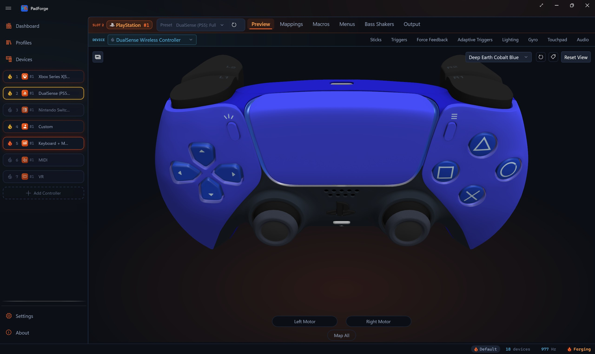
PadForge 5.3.0reWASD and DS4Windows profile import, key-by-key lighting on 1,563 RGB devices, lights that follow your screen, a keyboard you type on with the controller, and Twitch chat at the controls
Release notesPadForge 5.3.0
What's new

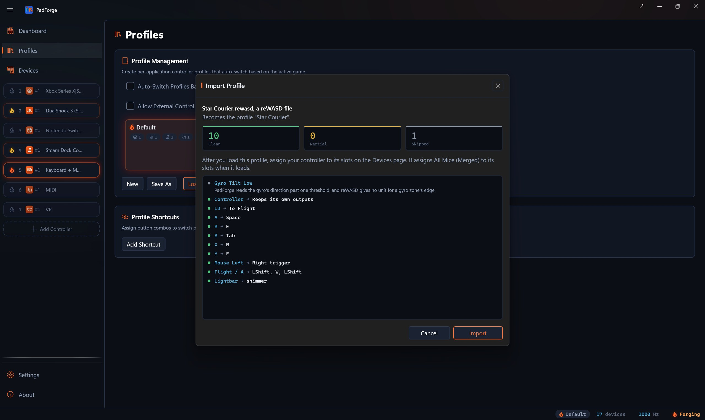
- reWASD and DS4Windows importA reWASD config or a DS4Windows profile becomes an ordinary PadForge profile. Before anything changes, a preview marks every binding Clean, Partial or Skipped, says why for each one that is not Clean, and names every program the profile would run. reWASD's shifts become shift layers, and its single, double, triple and long presses become macros that keep the file's wait times. A DS4Windows profile brings its shift modifiers, special actions, gyro and touchpad modes, lightbar, adaptive trigger effects and two-stage triggers.
- Key-by-key lightingPadForge lights 1,563 RGB keyboards, mice, headsets and other devices by itself, using the protocols that OpenRGB, OpenRazer, SignalRGB's plugins and QMK document. Where it knows a device's lights one by one, the Key Colors card colors them key by key on each shift layer, and Map Key Lights names a light by the key you press under it. Most of these devices have not run against PadForge yet.
- Screen ColorA lighting mode that follows the colors on one display, the whole screen or one area of it. A lightbar takes one color, and a keyboard whose lights PadForge knows one by one spreads the screen across its keys. PadForge reads the finished picture from Windows and stores none of it. It changes nothing in any game.
- Screen OverlayUp to eight windows above your game show a picture, the profile, a clock, play time, a stopwatch or a lightbar's color, with no keyboard screen needed. While the game is in front, clicks pass through them, and they never take its focus.
- Keyboard and Hotbar menusThe Keyboard menu style types into any Windows program from the controller, on a grid, a split keyboard or a daisy wheel, with word suggestions from Windows. It opens on any input you pick, and it can also open when a text box in a Windows app or browser takes focus. The Hotbar style is Steam Input's hotbar. A Steam config's Show Keyboard binding and its hotbars import as these two styles.
- Twitch ChatViewers play a controller slot by typing commands such as !a, !a+b or !a500ms in the stream's chat, and take turns with !claim. PadForge reads the chat without signing in and never posts in it. OBS shows the controller on the stream as a browser source. Twitch Chat has not run against a live channel yet.
- Use Only in PadForgeA button on the Devices page takes a USB keyboard or mouse away from Windows, so its keys and buttons reach only your mappings and macros. It takes a precision touchpad the same way while PadForge runs. The switch has run on one mouse and one touchpad. On a keyboard it has not completed yet.
- DualShock 4 speaker over USBA second-model DualShock 4 on a cable, or any DualShock 4 on Sony's USB wireless adapter, plays PadForge's sound through its built-in speaker as well as its headphone jack. This route has not run on a wired pad or on the adapter yet.
In motion
The 5.2 film
140 seconds of music and on-screen text, and a narrated version with captions.
PadForge 5.2
2:20 MP460 fpsNew in 5.2.0
PadForge 5.2, narrated
1:59 MP4CaptionsWith a screen reader
The narrated version runs 1 minute 59 seconds. A generated voice describes PadForge, English captions follow it, and its middle is a recording of the NVDA screen reader reading PadForge 5.1.0, the release that brought screen-reader support.
A 140-second film with music and on-screen text, and no narration. An Xbox controller becomes the Xbox 360 pad, DualSense or Steam Controller a game expects. The film then shows what is new in PadForge 5.2: driving games' telemetry mapped like a controller's inputs, DSX game mods with no DSX installed, the Novint Falcon, the screens on Logitech keyboards, DualSense haptics on any rumble pad, a DualShock 4's headphone jack, and HIDMaestro 2.1, which holds input when every processor is busy. In HIDMaestro's own test, a virtual DualShock 4's slowest frame took 1.4 ms instead of 360. It tours mapping, force feedback, motion, phones and remote play, and ends on the price: free.
For reviewers
Reviewer guides
Routes and step-by-step sessions for a review of 5.3.
The brief helps you pick a route for the hardware you have. The field guide gives each session its equipment, setup, steps, what a pass looks like and how to reset. The procedures follow the documentation and were not run while the guides were written.
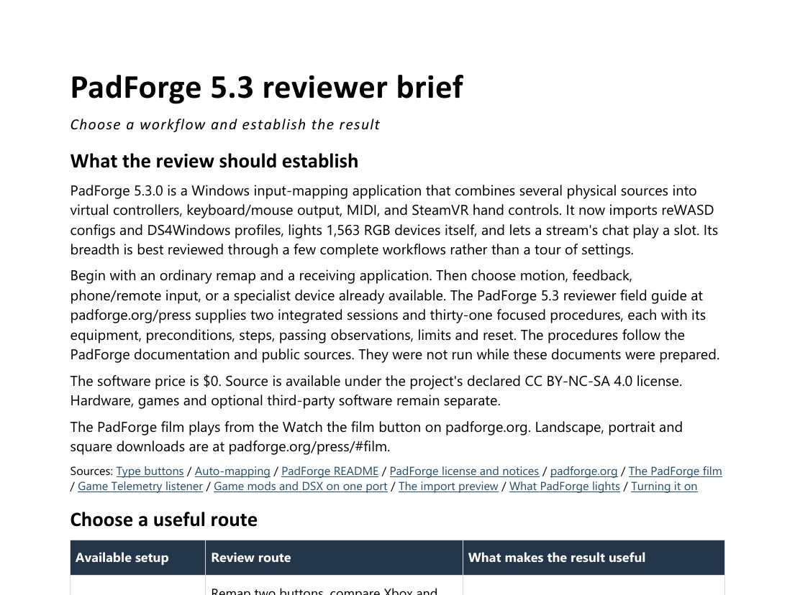
Reviewer brief
4 pages PDF145 KBUpdated for 5.3.0
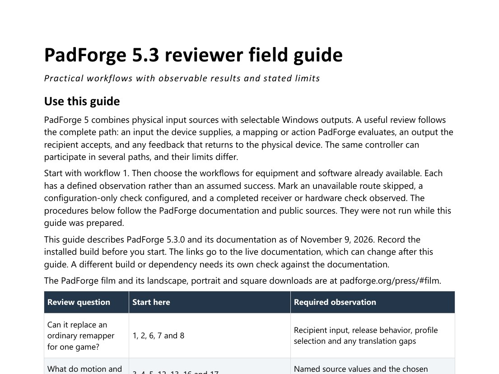
Reviewer field guide
34 pages PDF625 KBUpdated for 5.3.0
In the app
Screenshots
Full resolution. Original proportions.
reWASD and DS4Windows import
2560 × 1528 JPGNew in 5.3.0

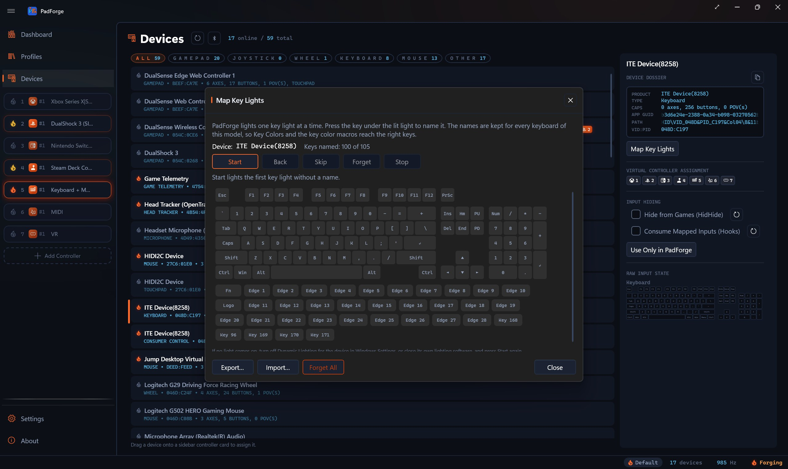
Map Key Lights
2560 × 1528 JPGNew in 5.3.0

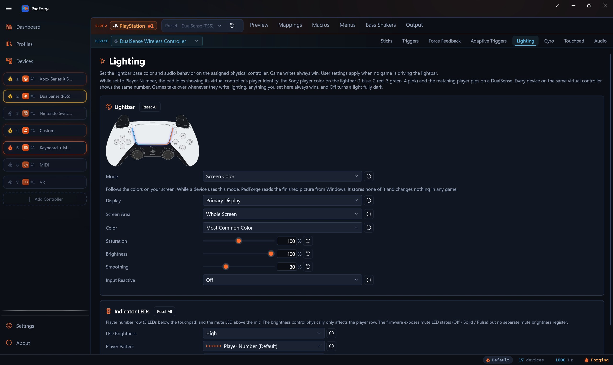
Screen Color
2560 × 1528 JPGNew in 5.3.0

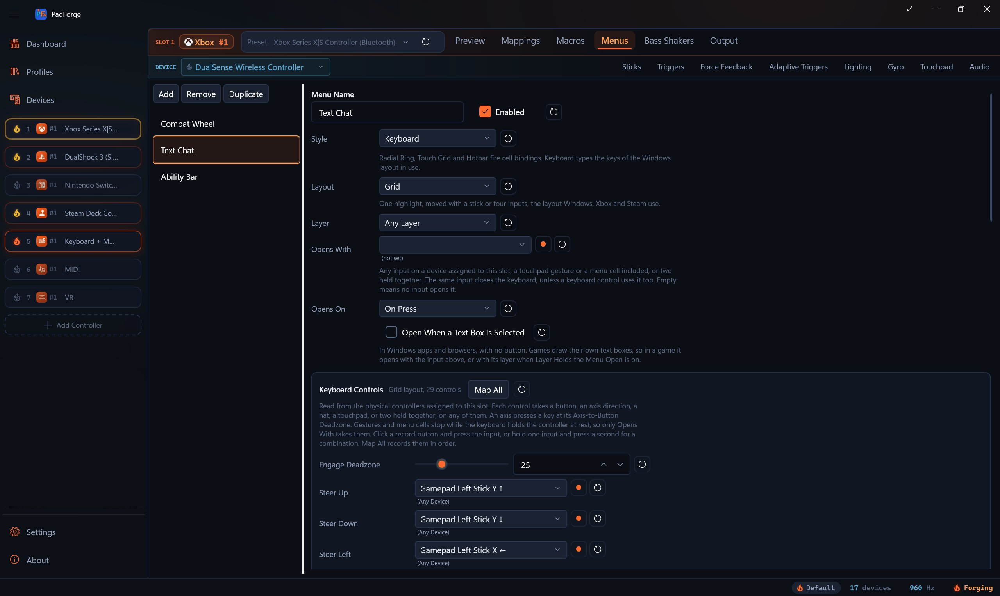
Keyboard menu
2560 × 1528 JPGNew in 5.3.0

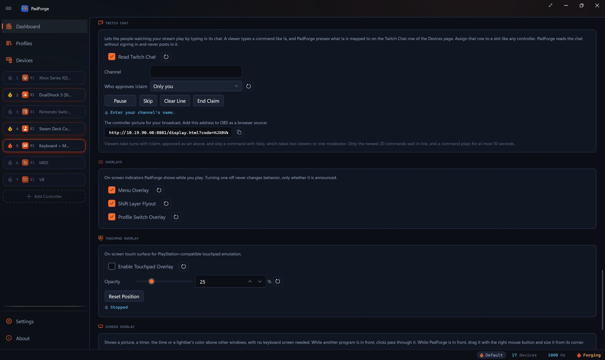
Twitch Chat
2560 × 1528 JPGNew in 5.3.0

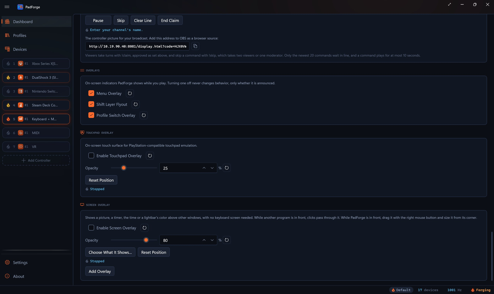
Screen Overlay
2560 × 1528 JPGNew in 5.3.0

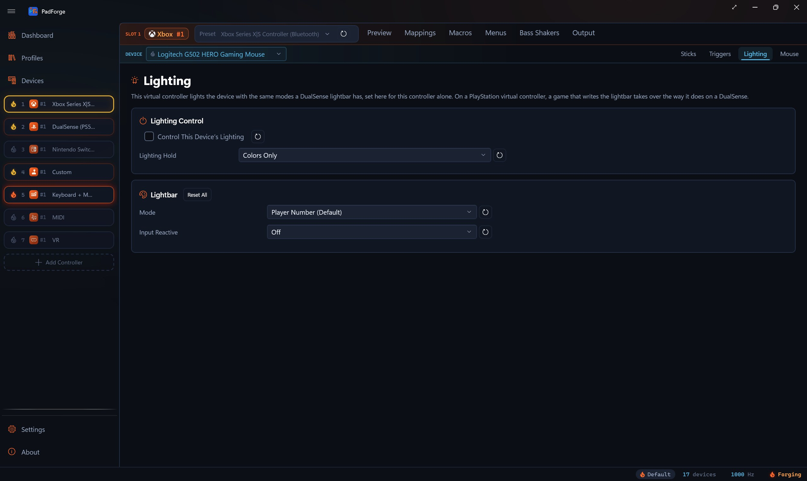
Mice and keyboards
2560 × 1528 JPG

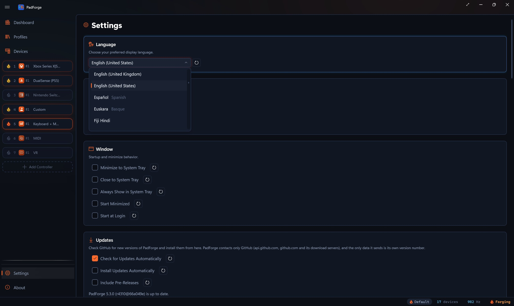
109 languages
2560 × 1528 JPG

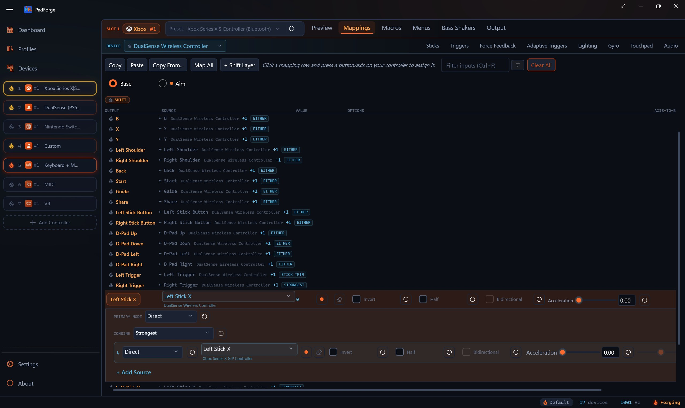
Button mappings
2560 × 1528 JPG

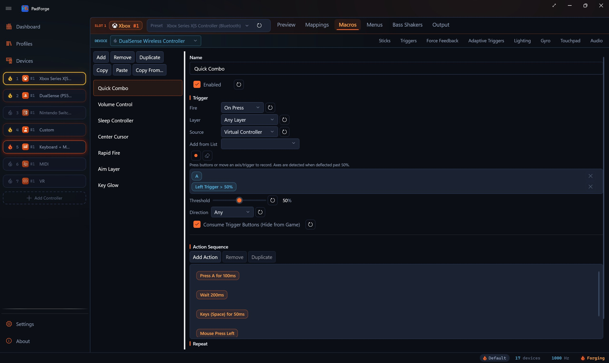
Macros
2560 × 1528 JPG

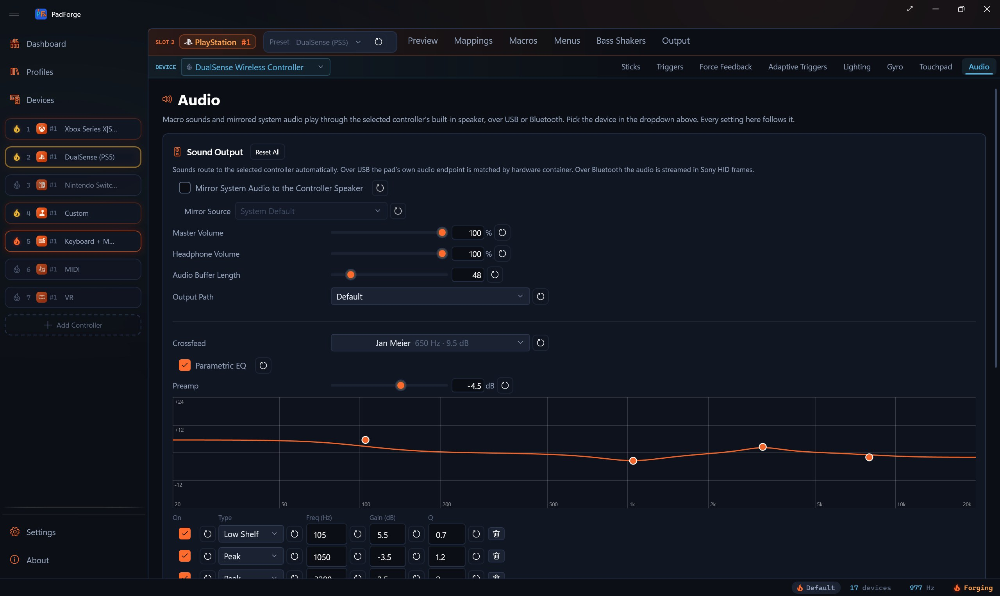
Controller audio
2560 × 1528 JPG

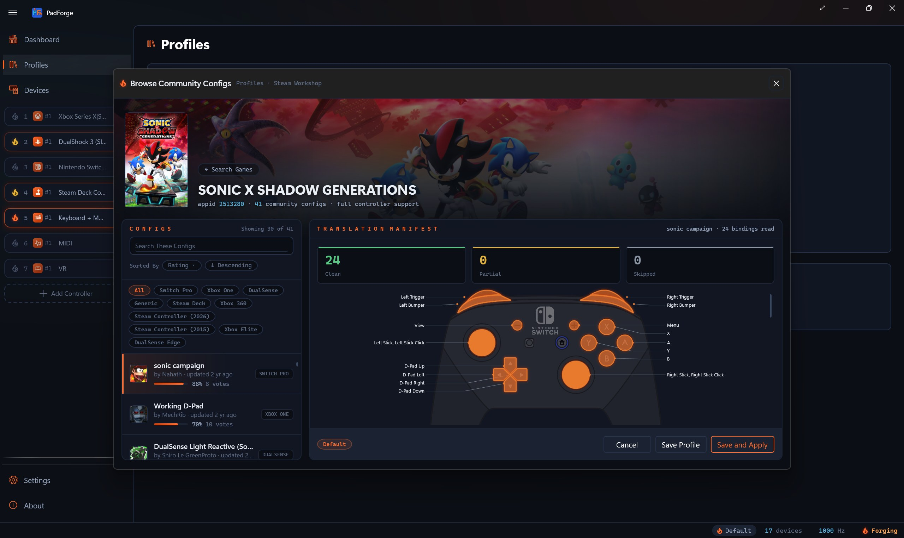
Steam community layouts
2560 × 1528 JPG
Identity
Brand assets
The PadForge logo and app icon,
with transparent backgrounds.

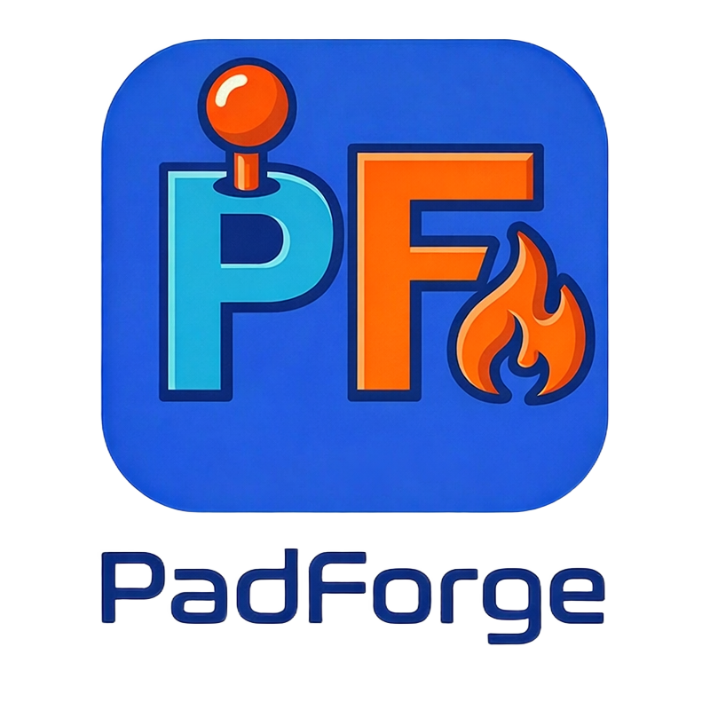
Logo
800 × 800 PNG

App icon
571 × 533 PNG
The project
About PadForge
PadForge is a free controller remapper for Windows. It maps gamepads, wheels, flight sticks, keyboards and mice onto as many as 16 virtual controllers, and it knows 2,667 devices by their USB identity. Players can tune stick response and gyro aiming, build macros and save profiles for individual games. PadForge also imports supported Steam community layouts, reWASD configs and DS4Windows profiles, and connects browser-based controllers. Its source code is available under CC BY-NC-SA 4.0.
“PadForge shines best in its incredibly vast range of supported controller types.”
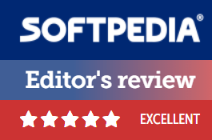
Softpedia editor's review Editor's Pick · rated 5 out of 5